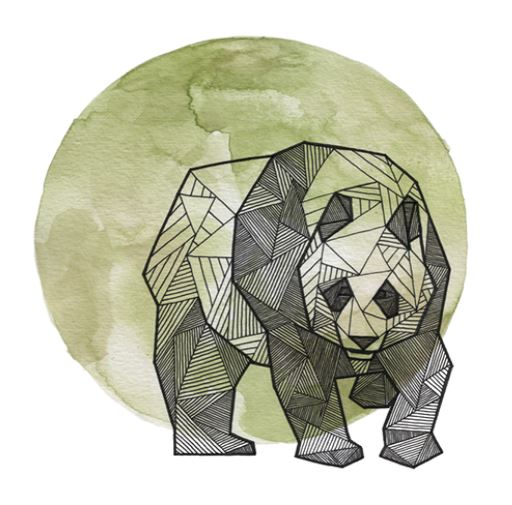

Geometric Vector Artwork
Visuals that are not only unique in their subject matter, but how they are executed, captivate us and make us more interested and engaged. Geometric vector art can be challenging, but if you can deliver something truly unique, the payoff is totally worth it.
A client may not request this type of artwork, but they are sure to be impressed by it if it’s done well. Check out some amazing geometric artwork from the Behance community:

Univerz 714 by Univerz 714
Geometric Animals by Allison Kunath

Nicholson by Paul DOUARD